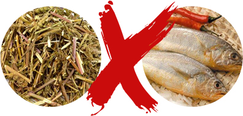

黄花鱼

黄花鱼·小科普
黄花鱼又名黄鱼。生于东海中，鱼头中有两颗坚硬的石头，叫鱼脑石，故又名石首鱼。鱼腹中的白色鱼鳔可作鱼胶，有止血之效，能防止出血性紫癜。黄花鱼分为大黄鱼和小黄鱼，分别为我国四大海洋业品种之一。大黄鱼也叫大先、金龙、黄瓜鱼、红瓜、黄金龙、桂花黄鱼、大王鱼、大黄鲞；小黄鱼也叫梅子、梅鱼、小王鱼、小先、小春鱼、小黄瓜鱼、厚鳞仔、花鱼。都隶属硬骨鱼纲，鲈形目，石首鱼科，黄鱼属。
趣养鱼平台合作渔场——鑫隆渔场，所养殖的黄花鱼是大黄鱼品种，是鲈形目石首鱼科中的佼佼者，我国重要的经济食用鱼种。大黄鱼通体黄色，与小黄鱼的主要区别：鳞较小、背鳍与侧线有鳞8～9行、鳔腹分枝的下分枝中前小枝与后小枝等长，脊椎骨一般为26个。大黄鱼一般体长300～400毫米，体重400～800克，最大750毫米长、4公斤重。大黄鱼是结群性近海鱼类，分布于我国南海、东海和黄海南部。
黄花鱼历史
我国传统饮食，对于黄花鱼有相当的认识。《本草纲目》记载黄花鱼“甘平无毒，合莼菜作羹，开胃益气。晾干称为白鲞，炙食能治暴下痢，及卒腹胀不消，鲜者不及”。黄花鱼营养丰富，鲜品中蛋白质含量高，钙、磷、铁、碘等无机盐含量也很高，且鱼肉组织柔软，宜于消化吸收。最妙的在于它的“蒜瓣肉”没有碎刺，最适合老人、儿童和久病体弱者食用。
关于黄花鱼，还有这样一则故事：
黄鱼在民国时期通常喻指金条，可见当时的黄鱼之高贵。相传蒋介石的得力助手——情报局局长戴笠就对黄鱼情有独钟，且经常安排手下不远万里从重庆远赴浙江为他购买美味的黄鱼。
戴笠的一个同学看到戴笠如今深受蒋介石重爱，官职又那么高，何不看在老同学的面子上也给自己弄个一官半职的岂不美哉？从他处听说戴笠这个人比较喜欢黄鱼，于是这位老同学把父亲经商这么多年的积蓄全部拿去换了6根金条，趁着戴笠回浙江老家探亲的时候递了过去，没想到戴笠看了一眼，就狠狠的拒绝了这位老同学。
并怒斥之：国难当前，百姓食不果腹，你若能把金条换成粮食给予百姓，也是好事一件！老同学听罢照做，后听街坊说道：戴局长爱黄鱼，不爱金黄鱼！
老同学大悟，次日游走鱼市买来几斤黄鱼放锅油炸之后，放在菜篮子里用红布盖上，戴笠临走之前将菜篮子递上，戴笠掀开红布时，喜笑颜开，欣然接纳了这个菜篮子。数日以后，这位老同学便收到了军统局的纳新通知，并渐渐被戴笠提拔并重用。“所以，在那个时候，黄鱼经常受到一些高官贵族的青睐，久而久之，黄鱼就成了尊贵的代名词，当然，金条又叫黄鱼就是这么个来历。
当然，我们伟大的国母宋庆龄也是非常喜欢吃黄鱼的，只是在那个动荡的年代，能吃上一口黄鱼是一个非常奢侈而难得的事情，通常也只有那些有身份有地位的人能够享受的起这个待遇。”
黄花鱼养殖技术
自1990年黄花鱼开始批量育苗，商品鱼养殖从1992年开始不断扩大规模，产量逐年增加。养殖省份从福建开始，并向浙江、广东，海南等省辐射。养殖方式从网箱养殖向池塘养殖拓展。放养的鱼种规格要求整齐一致。计划当年达到400克以上商品规格的，放养的鱼种规格要在100克左右。
黄花鱼养成阶段的饵料一般以冰冻上层鱼为主，并辅以粉状配合饵料。上层鱼用刀切成适口的鱼肉块，加工方便，不易散失，或把鱼绞成肉糜，拌成枯性强的团状饵料，用手挤压成大小不同的块状物来投喂。鱼肉糜较鱼块具较多优点：可混入部分粉状配合饵料或其他饵料，也可添加必要的维生素及药物，营养全面。
养成期间一般每天早、晚各投饵一次。同真鲷、妒鱼等相比，大黄鱼具有摄食缓慢且量少等特点。因此投饵要慢。高温期间生长最快。为保持商品鱼金黄色的天然体色。最佳生长水温22～26℃。盐度1.8%～2.5%，溶氧5毫升/升以上，pH8.0。
客户在趣养鱼平台认养的黄花鱼将在素有“中国大黄鱼之乡”之称的霞浦--鑫隆渔场进行养殖。霞浦沿海年表水温最低的在10℃以上，最高的在30℃以下，在这天然大黄鱼的栖息海域养殖大黄鱼，综合环境条件十分适合，成活率高，养殖的大黄鱼也接近于天然。

黄花鱼营养价值
黄花鱼含蛋白质、脂肪、维生素B1、B2和烟酸、钙、磷、铁、钾、碘等成分。其水解蛋白质含较多的氨基酸，如赖氨酸、亮氨酸、酪氨酸、丙氨酸、精氨酸、谷氨酸等17种氨基酸。
食疗作用
适合人群
1、一般人均宜于食用。贫血、头晕及体虚者更加适合。
2、女性：黄鱼有滋阴补阳之功，女士食用既能补血，又能使皮肤洁白细腻。适宜孕妇和产妇。
3、老人：常食黄鱼，可补中益气、聪耳明目、延缓衰老。
4、婴儿：黄鱼含有丰富的蛋白质、微量元素和维生素，对宝宝有很好的补益作用。但注意吃鱼前要把鱼刺剔除。
5、癌症患者：黄鱼含有丰富的微量元素硒，对各种癌症有防治功效。此外，黄鱼汤还是肿瘤患者理想的蛋白质补充剂。
宜：头晕，失眠，贫血，以及久病胃虚食减者宜食。适用量：每次80-100克。
忌：急慢性皮肤病患者忌食；支气管哮喘，癌症，淋巴结核，红斑狼疮，肾炎，血栓闭塞性脉管炎患者忌食。
黄花鱼饮食相宜（克）
荞麦与黄花鱼
因黄鱼多脂，荞麦性寒难消、动热风，都是不易消化之物。黄鱼味甘性平有小毒，多食难消化，荞麦性寒难消，食之动热风，两者都为不易消化之物，同食难消化，有伤肠胃。
荆芥与黄花鱼
二者同食造成身体不适。
食物相宜
黄鱼+苔菜
黄鱼与苔菜搭配食用，能为人体提供较高的营养成分，有润肺健脾、补气活血、清热解毒之功效。对产后体弱虚损、腰肌劳损有一定作用。
黄鱼+豆腐
豆腐中蛋氨酸含量较少，而黄鱼体内氨基酸含量非常丰富。豆腐含钙较多，而黄鱼中含维生素D，两者合吃，可提高人体对钙的吸收率。豆腐煮黄鱼还可预防儿童维生素D缺乏症、老年人骨质疏松症等多种疾病。黄鱼+豆腐豆腐中蛋氨酸含量较少，而黄鱼体内氨基酸含量非常丰富。豆腐含钙较多，而黄鱼中含维生素D，两者合吃，可提高人体对钙的吸收率。豆腐煮黄鱼还可预防儿童维生素D缺乏症、老年人骨质疏松症等多种疾病。
黄鱼+荠菜
黄鱼富含碘、磷、铁、钙、脂肪、维生素B1、维生素B2、维生素C、烟酸及蛋白质等;荠菜有利肝明目、利尿止血的作用。二者搭配是孕妇防治缺铁性贫血的保健菜肴。
黄鱼+苹果
黄鱼中含有丰富的蛋白质、维生素和多种微量元素;苹果中维生素、微量元素的含量也较为丰富，同食有助于营养的全面补充。经常食用黄花鱼，能增进食欲，防治脾胃疾患和尿路结石等症。黄花鱼鲜品中蛋白质含量高达18%，高于其他很多鱼类，且没有碎刺，最适合老人、儿童和久病体弱者食用。
黄花鱼的家常做法
清蒸黄花鱼
清蒸的味道，原汁原味，清淡鲜香。黄花鱼肉质细嫩，更适宜清蒸，也是最健康的吃法。
食材：黄花鱼1条
配料：油适量、盐适量、蒸鱼豉油适量、姜葱丝适量
做法：
小贴士：蒸鱼的时间视鱼的大小而定。